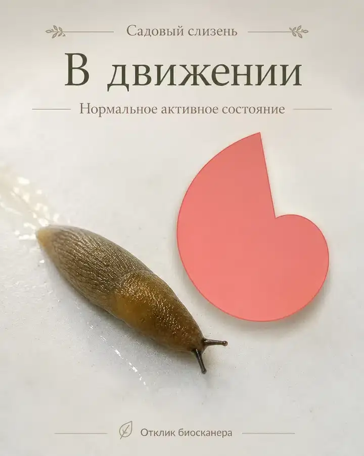
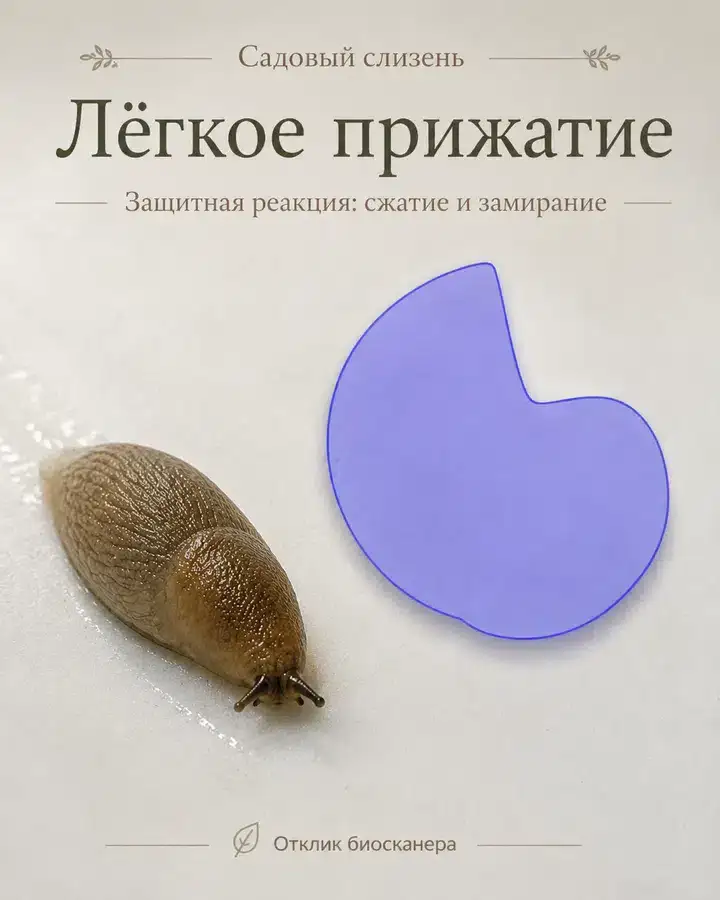
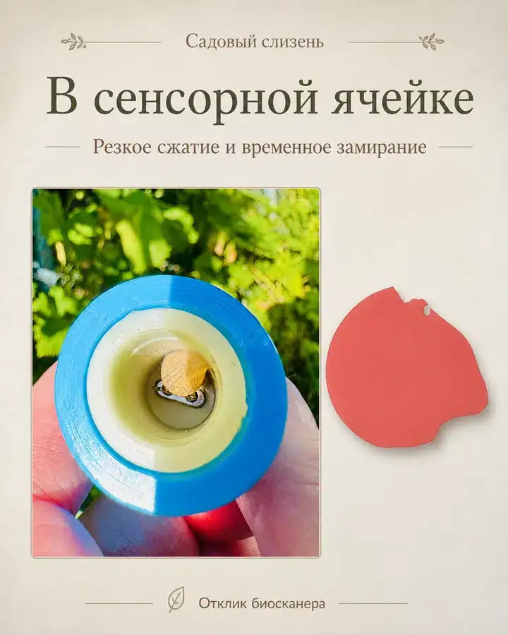
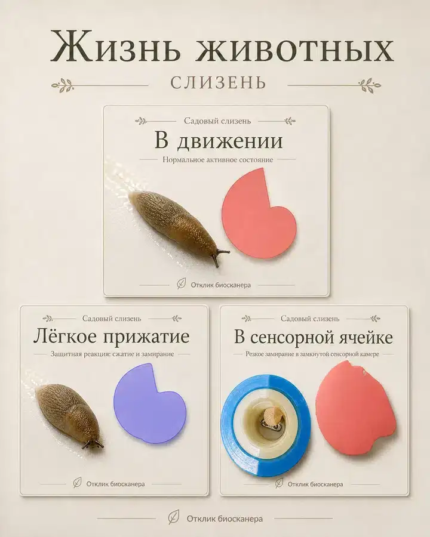
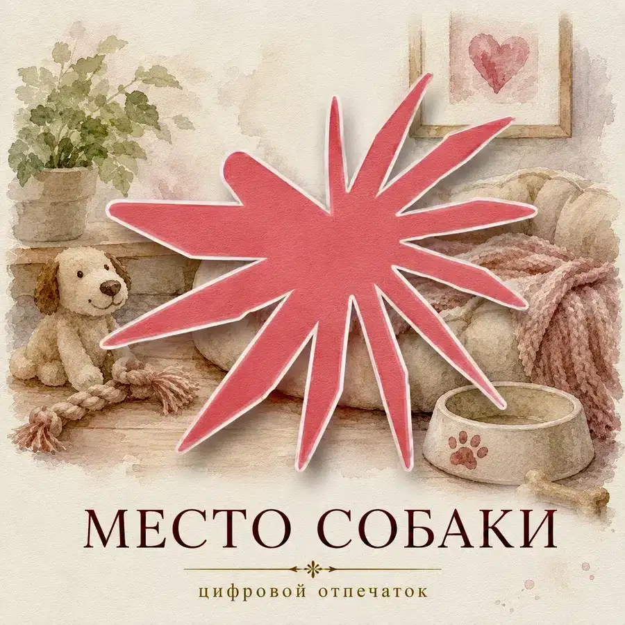
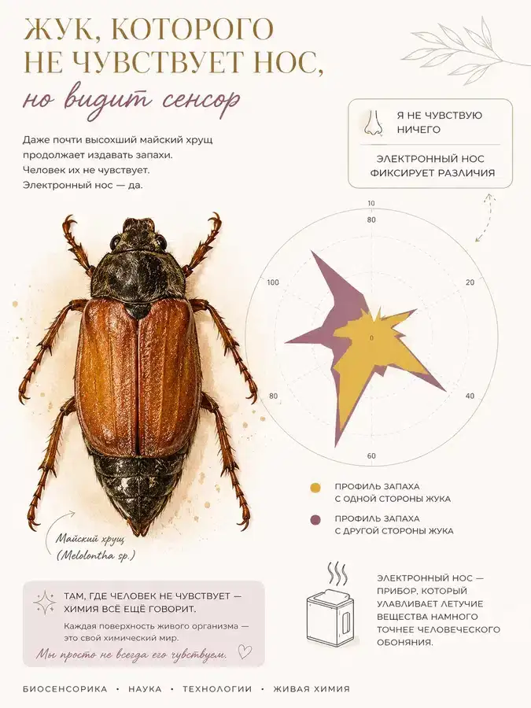

Садовый слизень — В движении
Нормальное активное состояние
Сенсоры превращают невидимый летучий профиль организма в сигналы, которые можно сравнивать и буквально увидеть.
Электронные носы открывают новую возможность изучения больших и малых животных — через изменения их летучего метаболического профиля. Организм постоянно выделяет в окружающую среду множество летучих соединений. Их состав и интенсивность могут изменяться вместе с физиологическим состоянием, реакцией на внешнее воздействие, напряжением, страхом, болью, радостью, болезнью и другими изменениями состояния организма.
В коллекции исследований наших электронных носов — с одним и восемью сенсорами — собраны сигналы летучих соединений самых разных представителей животного мира: мух, лесного клеща, кузнечика, майского жука, гекконов, мышей, крыс — домашних и содержащихся в виварии, кошек не менее трёх пород — от бесшёрстных до очень пушистых, собак не менее четырёх пород, а также лошади.
Часть этих наблюдений стала возможной благодаря нашим добровольцам, которые помогали проводить измерения со своими домашними животными. Мы очень благодарны им за участие в этой необычной исследовательской работе.
Животные отличаются размерами, образом жизни и внешней защитой организма: шерстью, хитиновой оболочкой, слизистым покровом и другими особенностями. Но это не препятствует регистрации сенсорами веществ, которые они выделяют в окружающую среду. При всём разнообразии живых существ в их реакциях обнаруживается нечто общее.
Животное, как и человек, постоянно выделяет в окружающую среду летучие соединения. Они образуются в ходе обменных процессов и поступают через дыхание, кожу, шерсть, слизистые оболочки и выделения организма. Поэтому химический след живого существа меняется вместе с его физиологическим состоянием.
В исследованиях нашей группы сенсоры позволяли наблюдать изменения такого следа при голоде и насыщении, напряжении и расслаблении, действии температуры и света, смене условий содержания, внешнем воздействии и стрессе, а также в процессе адаптации животного.
При этом электронный нос не определяет, «что чувствует» животное, и не заменяет наблюдение за его поведением. Он фиксирует объективное следствие происходящего — изменение летучего химического профиля организма.
Животные чрезвычайно различаются: шерсть, кожа, хитиновый или слизистый покров, размеры тела, особенности обмена веществ и образ жизни создают разные условия выхода молекул во внешнюю среду. Поэтому абсолютные величины сигналов у разных видов нельзя механически сравнивать между собой. Особенно информативны изменения одного и того же животного в разных состояниях при сопоставимых условиях измерения.
Форма цифрового отпечатка отражает соотношение сенсорных откликов, а его площадь и размер — величину зарегистрированного воздействия летучего профиля в сопоставимой серии. Так изменения организма становятся видимыми, хотя сами молекулы остаются невидимыми.
Самым большим потрясением за годы исследований стало даже не то, что электронный нос способен регистрировать летучий след самых разных животных, а насколько интенсивным и динамичным может быть химический обмен совсем маленького живого организма.
В наших экспериментах сенсорный отклик от крошечного лесного насекомого размером около 2 мм оказывался сопоставим по интенсивности с откликом от выдоха кожи человека. Размер организма, оказывается, совершенно не определяет масштаб тех химических событий, которые происходят в нём каждую секунду.
Не менее удивительной оказалась скорость изменений. В отдельных наших измерениях собаки и кошки за одну минуту успевали не менее трёх раз заметно изменить регистрируемый летучий профиль. Меняется ситуация — и практически сразу меняется химический след организма. Лошадь заметно реагирует даже на приятное ожидаемое событие — например, на угощение бананом.
У мух, муравьёв и других маленьких активных существ мы наблюдали чрезвычайно интенсивный летучий обмен. Если использовать принятое в наших исследованиях условное понятие «энергии» как определённой составляющей интенсивности выделяемых и регистрируемых молекул, то она у некоторых небольших животных оказывается значительно выше, чем у большого и сильного человека. Это не физическая энергия: сенсор регистрирует молекулы и скорость изменения их выделения.
Такая динамика показывает, насколько быстро маленький организм способен реагировать на окружающую среду, мобилизоваться и менять метаболические и нейрогуморальные процессы. Человек далеко не всегда способен перестраиваться так быстро. Маленькая букашка, красивая бабочка, жук или муравей тоже испытывают напряжение и страх; мы видим не субъективное переживание, а его химическое сопровождение.
Есть и ещё одна неожиданная линия исследований — индивидуальность и родство. В наших экспериментах с мышами и крысами особенности летучего профиля обнаруживают сходство между родственными животными, в том числе братьями и сёстрами.
Сходство особенностей выдоха кожи родителей и детей позволяет поставить более широкий вопрос: может ли индивидуальный характер метаболических и нейрофизиологических реакций, проявляющийся в летучем профиле, частично наследоваться? Чьи особенности проявятся сильнее — мамы, папы, а возможно, бабушки или дедушки? Сегодня это корректнее рассматривать как научную гипотезу и направление дальнейших исследований, а не как готовый способ определения наследования нервной системы по запаху.
Живые существа рассказывают о себе молекулами. Чем дольше мы регистрируем и визуализируем их летучий химический профиль, тем яснее понимаем: даже самые маленькие живые организмы устроены гораздо сложнее и совершеннее, чем может показаться на первый взгляд.
Это состав большой исследовательской коллекции. В текущей версии зала открыта только часть материалов; новые серии будут появляться постепенно. В экспозицию добавляются только реальные экспериментальные работы — без выдумывания новых отпечатков.
Мухи, лесной клещ, кузнечик, майский жук.
Гекконы — наблюдение изменений летучего профиля в разных состояниях и условиях.
Мыши; крысы — домашние и содержащиеся в виварии.
Не менее трёх пород — от бесшёрстных до сильно пушистых.
Не менее четырёх пород.
Лошадь.
Самый влажный участник наших исследований — садовый слизень — оказался не исключением. Его тело покрыто слизью, а внешняя поверхность совсем не похожа на кожу млекопитающих. Тем интереснее оказалось наблюдать его с помощью простого односенсорного электронного носа BioScan.
При движении, лёгком прижатии и помещении в сенсорную ячейку прибор фиксировал разные летучие профили. Менялось состояние животного — менялся и сенсорный отклик. Это позволяет увидеть одну из главных идей зала: даже очень разные животные отвечают на окружающий мир не только поведением — меняется и невидимый химический след, который организм оставляет в воздухе.

Нормальное активное состояние

Защитная реакция: сжатие и замирание

Резкое сжатие и временное замирание

Коллаж трёх состояний
Две работы из большой исследовательской коллекции животных.

